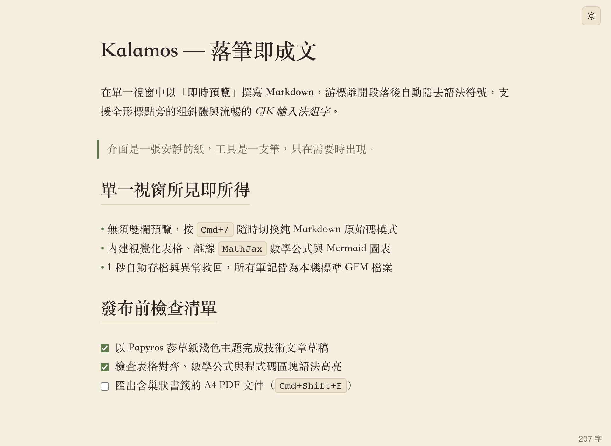
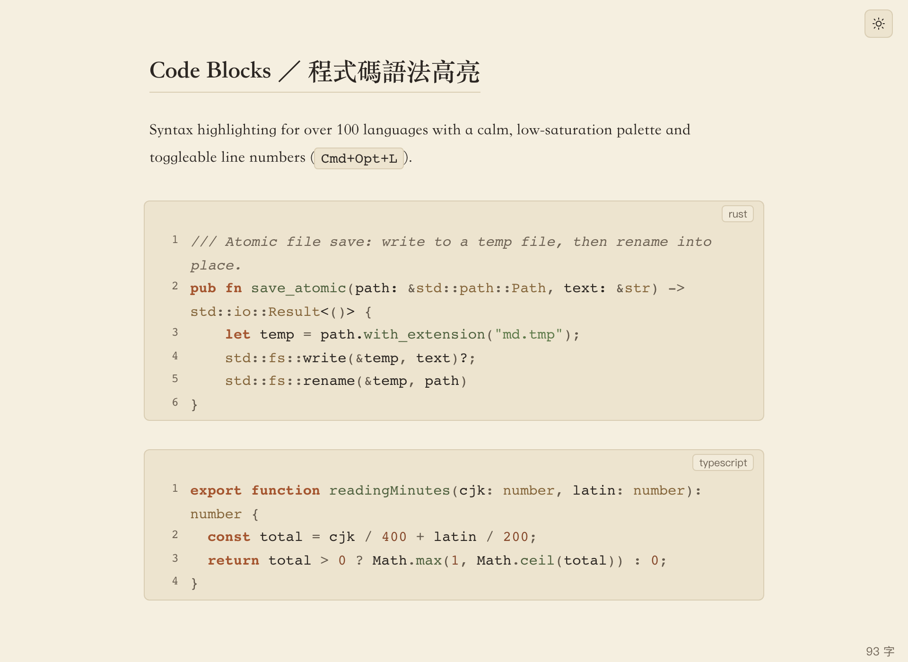
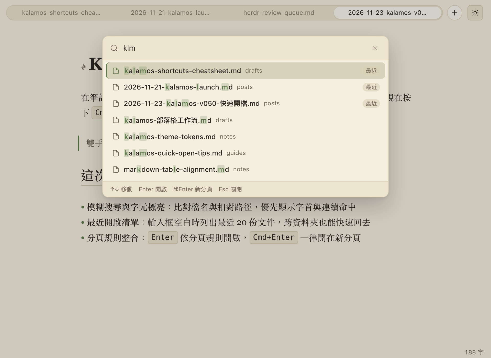
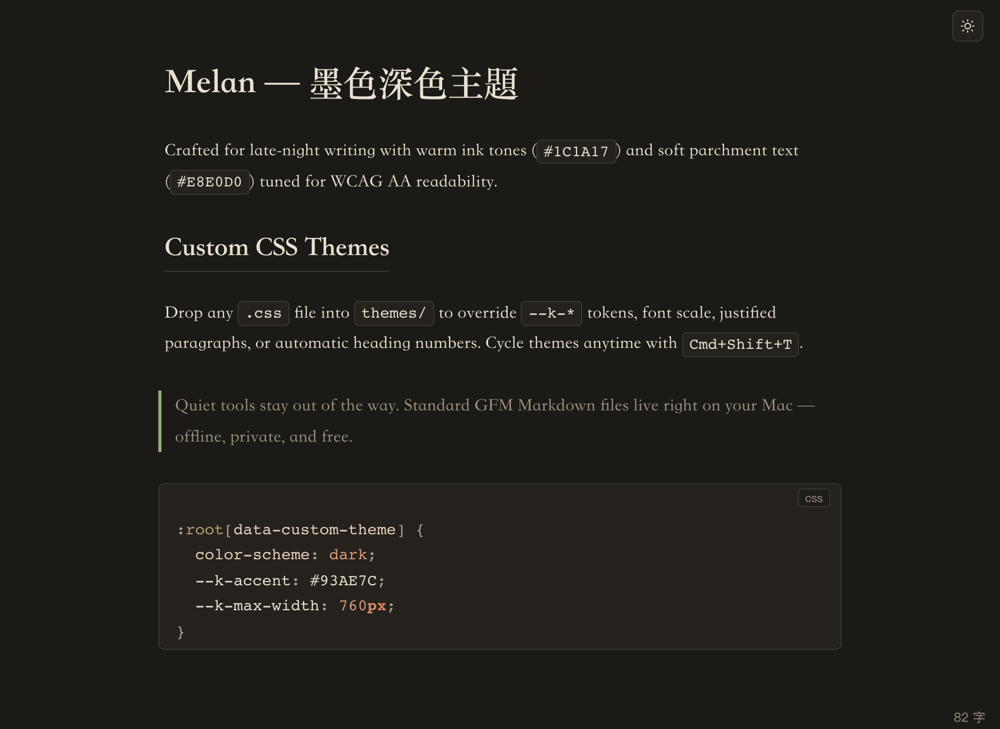

快速開檔與最近開啟
按 Cmd+P（Windows 為 Ctrl+P）模糊搜尋目前資料夾內的 Markdown 檔並標亮命中字元。空白時顯示最近開啟的 20 筆檔案（不限資料夾），支援 Cmd+Enter 開新分頁與原生選單「檔案 > 打開最近使用」。
落筆即成文
專為 macOS 與 Windows 打造的所見即所得（WYSIWYM）Markdown 桌面編輯器。以古希臘「蘆葦筆」為名，讓純文字 GFM 文件在你書寫的瞬間化作清朗紙面——免費、離線、免帳號。
Windows 版目前為實驗性且未簽章（出現 SmartScreen 警告請點「其他資訊」→「仍要執行」）；macOS 版未經公證（首次開啟請對應用程式按右鍵選「打開」）。

告別雙欄對照與反覆切換。打完結尾符號即刻渲染，游標離開後自動隱去語法標記；隨時按 Cmd+/ 切換原始碼檢視。
模糊搜尋目前資料夾內的 Markdown 檔並標亮命中字元；輸入框空白時列出最近開啟的文件，並整合「檔案 > 打開最近使用」。
全形標點旁的粗體與斜體自然生效，CJK 輸入法組字期間凍結裝飾更新，打字流暢不跳動。
以標準 GitHub Flavored Markdown 存檔於本機資料夾。原子寫入、1 秒自動存檔與異常救回，讓每份草稿安然無恙。
按 Cmd+Opt+T 以格線選取器插入表格，或在行尾輸入 |a|b| 按 Enter 直接轉換。格內即時編輯、拖曳欄界調寬，表格上方專屬留白區的浮動工具列絕不遮擋內文。

內建離線 MathJax 3 引擎渲染行內 $...$ 與區塊 $$...$$ 公式（支援 AMS、mhchem 化學式與 bbox），並直接把 Mermaid、flowchart.js 與序列圖繪製為與主題配色一致的 SVG。

涵蓋 100 種以上程式語言，採用呼應紙墨色調的低飽和度高亮配色，搭配內建 JetBrains Mono 連字等寬字體，並可用 Cmd+Opt+L 隨時開關行號。

按 Cmd+P 在筆記與部落格間快速跳轉，以多分頁同時處理草稿，從資料夾整理到轉檔交付都在同一個視窗內完成。

按 Cmd+P（Windows 為 Ctrl+P）模糊搜尋目前資料夾內的 Markdown 檔並標亮命中字元。空白時顯示最近開啟的 20 筆檔案（不限資料夾），支援 Cmd+Enter 開新分頁與原生選單「檔案 > 打開最近使用」。
在同一視窗開啟多份文件（Cmd+T / Cmd+W / Ctrl+Tab），支援拖曳排序與各自獨立的復原紀錄。搭配文件內尋找取代（Cmd+F）、資料夾跨檔搜尋（Cmd+Shift+F）與偏好設定（Cmd+,）。
拖放或貼上圖片時自動存入文件旁的 assets/ 資料夾並插入相對路徑。支援 <img> 尺寸與 zoom 縮放、靜態部落格根目錄（typora-root-url 或 Cmd+Opt+R），以及透過 settings.json 串接自訂 CLI 圖床上傳程式。
按 Cmd+Shift+E 匯出 A4 PDF，自動建立對應標題層級的巢狀 PDF 書籤，數學公式與圖表完整呈現（macOS 使用原生 PDFKit，Windows 使用無頭 Edge／Chrome）。選用安裝 Pandoc 後更可匯出 DOCX、ODT、LaTeX、MediaWiki、EPUB，或反向匯入為乾淨的 Markdown。
按 Cmd+Shift+O 開啟本機資料夾，在檔案樹、檔案列表與大綱面板間自由切換，並即時監聽外部變更（完美相容 iCloud Drive 與 Dropbox）。狀態列同步統計中英字數、閱讀時間與框選範圍字數。
支援懸停預覽與點擊跳轉的註腳、YAML Front Matter、標題書籤連結（Cmd+Shift+C）、離線 GitHub Emoji 自動完成（:smile），以及半形與中文全形括號引號自動配對。
內建 Papyros（莎草紙）、Melan（墨）與跟隨系統外觀，按 Cmd+Shift+T 一鍵輪切。將自訂 .css 放入 themes/ 資料夾即可自由調整色票、字級、兩端對齊或標題自動編號。

開啟 Ataraxia 專注模式（F8）淡化非當前段落，搭配 Stichos 打字機模式（F9）讓游標所在行始終穩居視窗中央，長文寫作一氣呵成。

雙手無須離開鍵盤，所有核心操作皆可一鍵完成。在 Windows 上請將 Cmd 對應為 Ctrl、Opt 對應為 Alt（Ctrl+Tab 雙平台相同）。
Kalamos（κάλαμος，讀音 KA-la-mos）是古希臘人在莎草紙上寫字使用的「蘆葦筆」。介面中的各項功能命名皆延續這份書寫意象：Papyros（莎草紙淺色主題）、Melan（墨色深色主題）、Ataraxia（平靜無擾的專注模式）與 Stichos（單行置中的打字機模式）。
不一定——Pandoc 完全是選用的。日常編輯、即時預覽、MathJax、Mermaid 圖表與含書籤的原生 PDF 匯出皆可開箱即用，不需額外安裝工具。
只有需要匯出 DOCX、ODT、LaTeX、MediaWiki、EPUB，或將這些格式匯入轉成 Markdown 時，才需要安裝 Pandoc（macOS 用 brew install pandoc、Windows 用 winget install JohnMacFarlane.Pandoc；匯入功能需 2.15 以上以支援沙盒模式）。
是的。Kalamos 沒有帳號、沒有試用期、沒有序號驗證，也沒有任何遙測回傳。字型、MathJax、Mermaid 與 Emoji 資料全數內建於本機，所有筆記都以標準純文字 .md 儲存在你的電腦裡。
目前發佈版尚未進行 Apple 公證。將 Kalamos.app 拖入 /Applications 後，請在 Finder 對應用程式按右鍵選擇「打開」（或至「系統設定 → 隱私權與安全性」點選「仍要打開」），也可以在終端機執行以下指令移除隔離屬性：
xattr -cr /Applications/Kalamos.app
Windows 版（支援 Windows 10 / 11 x64）目前為實驗性且未簽章。執行 -setup.exe 或 .msi 安裝程式時若出現 Windows Defender SmartScreen 警告，請點選「其他資訊」→「仍要執行」。
執行環境需要 Microsoft Edge WebView2 Runtime——Windows 11 已內建，Windows 10 若尚未安裝，安裝程式會自動透過內含的 bootstrapper 下載並安裝。
可以。將使用 :root[data-custom-theme] 選擇器的 .css 檔放入 ~/Library/Application Support/io.kalamos.app/themes/（macOS）或 %APPDATA%\io.kalamos.app\themes\（Windows）即可覆寫色票、字體或標題自動編號。若要串接圖床，在同目錄下的 settings.json 設定 uploadCommand（例如 PicGo CLI）後按 Cmd+Opt+U 即可上傳。
前往 GitHub Releases 下載最新 macOS 或 Windows 安裝檔，或直接從原始碼自行建置。
Windows 版目前為實驗性且未簽章（出現 SmartScreen 警告請點「其他資訊」→「仍要執行」）；macOS 版未經公證（首次開啟請對應用程式按右鍵選「打開」）。